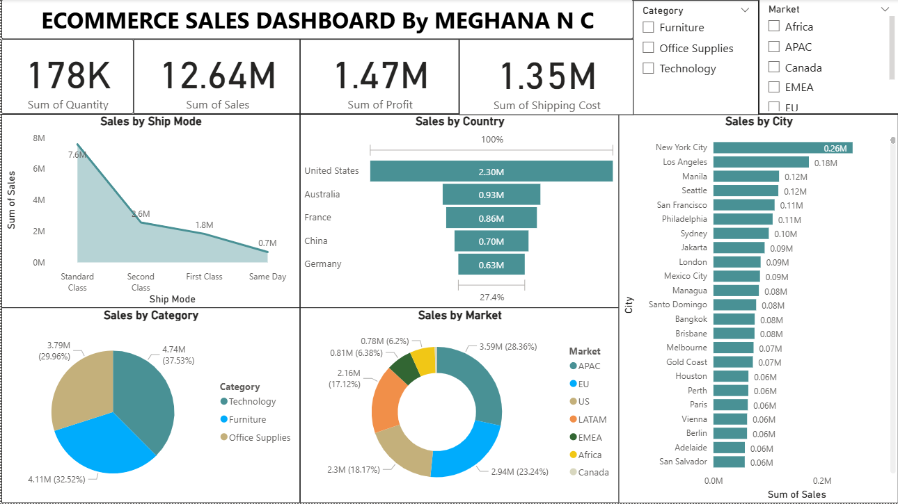
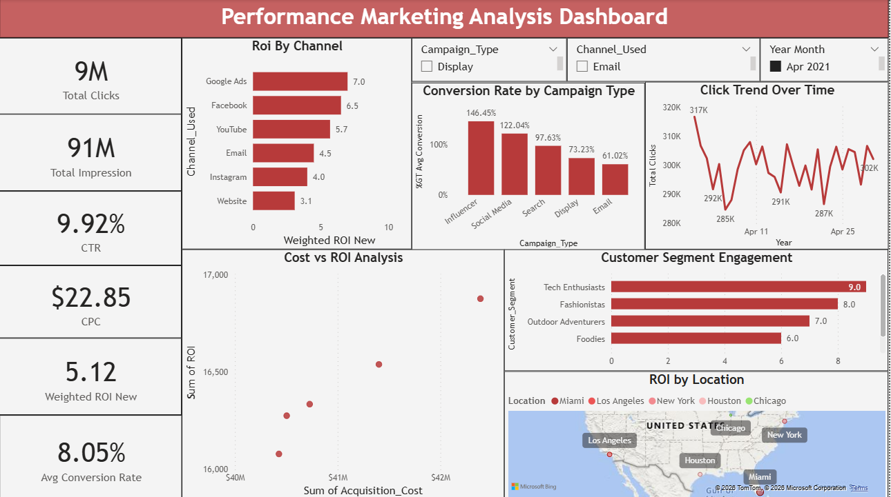
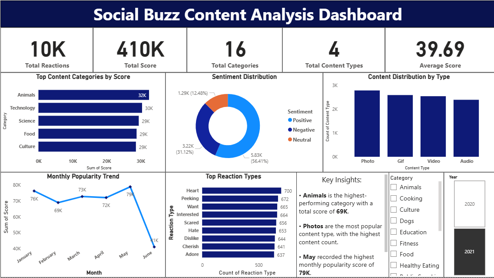
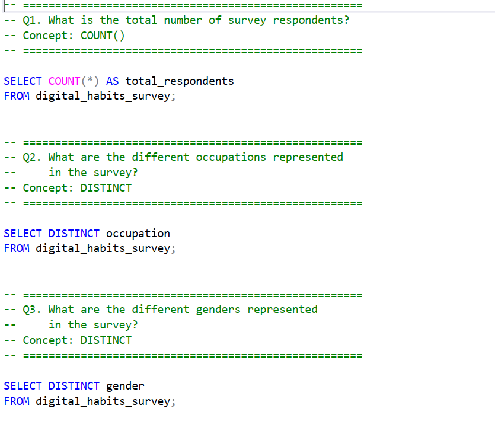

Featured Project
An interactive Power BI dashboard developed as part of a live
TechTip24 Power BI workshop. The project analyzes sales, profit,
shipping costs, product categories, markets, ship modes, and
geographic performance to generate actionable business insights.


An analytical project focused on evaluating marketing performance,
customer engagement, campaign effectiveness, and key business metrics
to generate actionable business insights.

An analysis of social media content to identify content trends,
sentiment patterns, and audience engagement, using Power BI to
transform data into meaningful business insights.
End-to-End Data Analytics Project

An end-to-end data analytics project analyzing digital habits,
screen-time behavior, online learning, and productivity from a
68-respondent survey using Excel, Python, SQL, MySQL, and Looker Studio.
I am a Data Analyst with experience in analyzing business,
marketing, and operational data. I use SQL, Python, Power BI,
and Advanced Excel to transform data into meaningful insights
and support data-driven decision making.
I enjoy understanding business requirements, exploring data,
identifying trends and patterns, and presenting insights in a
clear and meaningful way. I am continuously developing my
analytical and technical skills with the goal of growing in
Data Analytics and Data Science.
My Skills
Technical Skills
I work with a range of data analytics tools and technologies
to collect, clean, analyze, visualize, and communicate data.
Data Analysis
- SQL
- Python
- Advanced Excel
- Power BI
Data & Visualization
- Data Cleaning
- Data Visualization
- ETL
- Dashboard Development
My Experience
Professional Experience
Trainee Data Analyst
Clinilaunch Research Institute (CLRI) | Sep 2025 – Present
-
Analyzing performance marketing, grievance & feedback, and HR data
to identify trends and support data-driven decision-making.
-
Collecting, cleaning, validating, and preparing data from multiple
sources based on business requirements.
-
Identifying root causes, uncovering process gaps, and recommending
data-driven solutions to improve operational efficiency.
-
Developing Power BI dashboards and writing SQL queries to track KPIs,
generate reports, and deliver actionable insights.
-
Automating repetitive data preparation and reporting tasks using Excel
while collaborating with stakeholders to deliver analytical solutions.
Junior Software Engineer
Mitra Softwares | Mar 2024 – Aug 2024
-
Automated repetitive data processing tasks using Python, reducing
manual effort and improving operational efficiency.
-
Assisted in analyzing ERP system data, identifying process gaps,
and preparing reports to support business decisions.
-
Supported ERP modules for educational platforms through data analysis,
testing, and issue resolution.
-
Collected, cleaned, transformed, and validated data to improve the
quality and accuracy of analysis and reporting.
Data Analyst Intern
Psyliq | Dec 2023 – Feb 2024
-
Analyzed HR and healthcare datasets using SQL and Power BI to identify
trends and generate actionable insights.
-
Developed interactive Power BI dashboards and presented analytical
findings to support data-driven decision-making.
M.Sc. in Data Science
REVA University | 2023
Bachelor of Computer Applications (BCA)
Kuvempu University | 2021
I'm open to Data Analyst and Data Science opportunities.
If you'd like to discuss a project, opportunity, or collaboration,
feel free to connect with me.